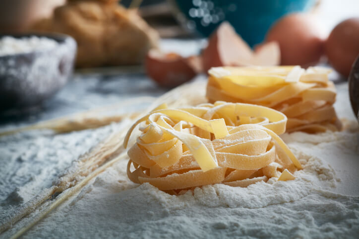

Massa fresca de macarrão

Tempo de preparo:
1h 30
Porção:
1 pessoa / A definir
Ingredientes:
- 90 g de farinha de trigo
- 1 ovo
*Vale ressaltar que essa receita é feita para uma pessoa, então se quiser fazer para mais é só multiplicar ela para a quantidade certa
Modo de preparo:
- Coloque toda a farinha numa tigela circular e faça um buraco no meio parecendo um vulcão e coloque os ovos nesse meio. Aos poucos vá misturando, com um garfo, o ovo com a farinha até que fique bem condensado.
- Após ela estar bem condesada e não conseguir mais misturar com o garfo, coloque-a numa pia de mármore ou em cima de uma tábua de madeira e continua misturado até grande parte da farinha ter se grudado a massa.
- Limpe o local, retire toda a farinha e coloque a massa novamente na tábua limpa e comece a sovar até perceber que a massa está desgrudando das mãos.
- Deixe a massa descansar por 30 minutos enrolado num plástico filme para não ressecar.
- Divida a massa na quantidade de ovos utilizado para começar a abri-la.
- Utilize um rolo de madeira ou a máquina para abrir a sua massa o máximo que conseguir, e sempre tendo cuidado para não quebrar ela, caso contrário misture tudo novamente e refaça o processo do início.
- Após aberta escolha qual o tipo de massa deseja fazer e corte ela a medida que preferir e deixa-a descansar em cima de uma mesa ou pano limpo por mais 30 minutos.
- Enquanto a massa descansa coloque bastante água para ferver a medida da quantidade de massa você possui e adicione 1 colher (sopa) de sal para cada ovo usado
- Ao passar dos 30 minutos e a água fervendo, coloque toda a massa na panela e misture um pouco para a massa pegar o sal da água e não grudar.
- Deixe o macarrão ferver a medida que preferir.
- Quando terminar de ferver, jogue o macarrão no escorredor para tirar a água e em seguida jogue numa tigela para lá ser adicionado o molho que será misturado a massa.
- E Voilà, temos nossa massa fresca
*Antes de começar deixe os ovos estarem na temperatura ambiente para que não ocorra choque térmico dele com a farinha.